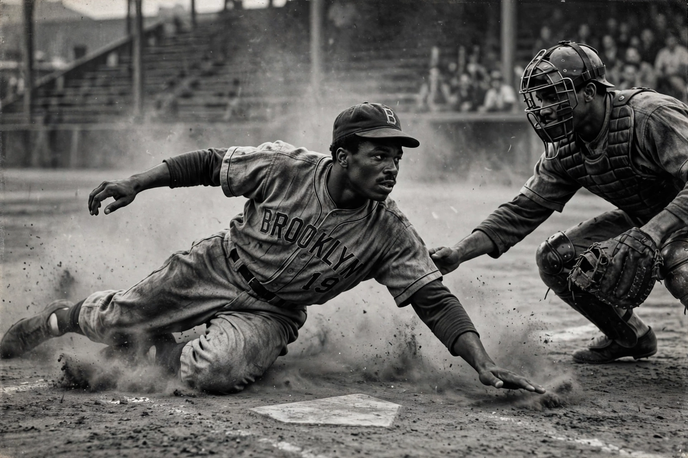

From Wikipedia, the free encyclopedia
| Jackie Robinson | |
|---|---|
 Black-and-white photograph of Jackie Robinson in a Brooklyn Dodgers uniform sliding into home plate | |
| Born | 31 January 1919, Cairo, Georgia, US |
| Died | 24 October 1972 (aged 53), Stamford, Connecticut, US |
| Position | Second baseman |
| Teams | Kansas City Monarchs (1945); Brooklyn Dodgers (1947–1956) |
| Honours | Rookie of the Year 1947; NL MVP 1949; World Series champion 1955; number 42 retired across MLB (1997) |
Jack Roosevelt Robinson (1919–1972) was an American professional baseball player who became the first African American to play in Major League Baseball in the modern era. Signed by Brooklyn Dodgers executive Branch Rickey, Robinson debuted on 15 April 1947, breaking the sport's colour line and enduring racial abuse with a public pledge of restraint agreed with Rickey for his first seasons. He won the inaugural Rookie of the Year award that year, the National League Most Valuable Player award in 1949, and helped Brooklyn to six pennants and the 1955 World Series title over the New York Yankees.
Before baseball Robinson was a four-sport varsity athlete at UCLA and served as an Army lieutenant, successfully challenging a segregated military bus in 1944. After a season with the Kansas City Monarchs of the Negro American League and a year in Montreal, he joined the Dodgers, where his daring base-running — including steals of home — and all-round excellence made him a six-time All-Star. His success opened the majors to a generation of Black and Latin American stars and made him a leading public figure of the early civil rights movement; after retiring he worked as a business executive, columnist and activist until his death in 1972.
Robinson was elected to the Baseball Hall of Fame in 1962, his first year of eligibility. In 1997 MLB retired his number 42 across every team — the first such honour in American professional sport — and every 15 April players across the league wear 42 to mark Jackie Robinson Day.
Categories: Jackie Robinson | Brooklyn Dodgers players | African-American baseball players | National Baseball Hall of Fame inductees